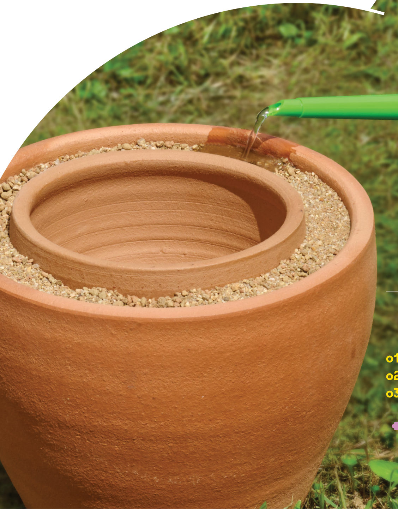
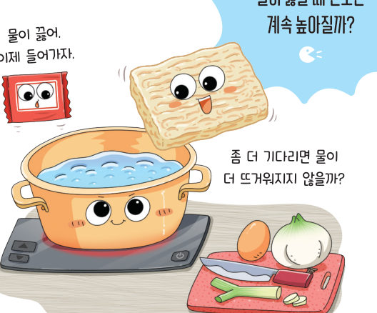
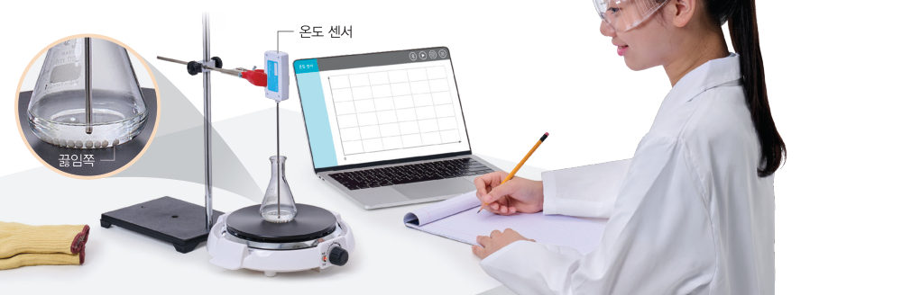
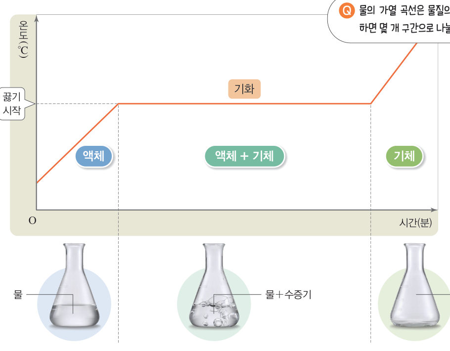
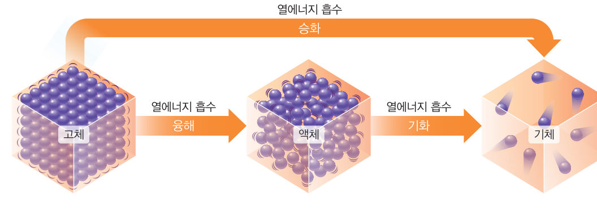
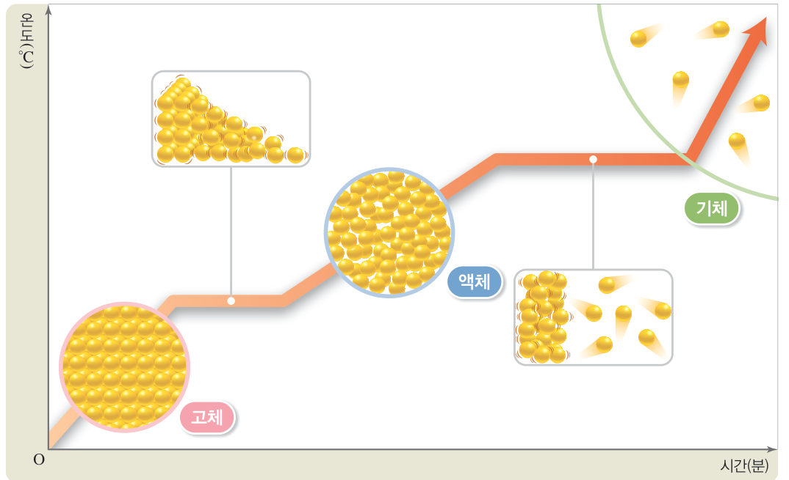

살아있는 교과서 · Ⅳ. 물질의 상태 변화 · 3. 상태 변화와 열에너지 · 02 140~143쪽
물질을 가열할 때의
물질을 가열할 때의
온도 변화
“물이 끓어. 이제 들어가자.” “좀 더 기다리면 물이 더 뜨거워지지 않을까?” 물이 끓을 때 온도는 계속 높아질까? 3D 가열 장치와 가상 온도 센서로 가열 곡선을 그려 보자.
🎯 이 단원을 배우면 — 물질을 가열할 때의 온도 변화를 측정하여 가열 곡선을 그리고, 상태가 변할 때 입자 배열의 변화를 열에너지와 관련지어 설명할 수 있다.
탐구상태 변화 실험에서 가열 곡선 그리기 140~141쪽
물질을 가열할 때 온도는 어떻게 변할까?

- 삼각 플라스크에 물(●증류수)을 1/3 정도 넣고 끓임쪽을 넣는다.
- 디지털 탐구 도구 활용 온도 센서를 삼각 플라스크 속 물에 넣어 스탠드와 집게로 고정하고 스마트 기기를 연결한다.
- 자료 수집 온도 측정 앱을 실행한 뒤 가열 장치로 물을 가열하면서 온도를 측정하여 표에 기록하고, 시간–온도 그래프를 확인한다.
- 관찰 물을 가열하면서 삼각 플라스크 속에서 일어나는 변화를 관찰하여 표에 기록한다.
⚠️ 유리 기구를 다룰 때 깨지지 않게 조심한다. 가열 장치 표면이 뜨거우므로 화상을 입지 않도록 주의한다.
3D 가상 실험가상 가열 장치와 온도 센서
[가열 시작]을 누르면 1분마다 온도와 플라스크 속 변화가 표에 기록돼요. 가열 세기와 물의 양을 바꿔 다시 측정해 보자. ‘다르게 해 보기’의 얼음 녹이기도 할 수 있어요. 드래그하면 장치가 돌아가요.
물 끓이기0:00
온도 센서-
상태-
정리해 볼까
1자료 해석 물이 끓는 동안 온도는 약 ℃로 . 이때 물의 상태는 이다.
2가열 세기를 세게 하면 물이 끓기 시작할 때까지 걸리는 시간은 , 끓는 동안의 온도는 .
3물의 상태가 변하는 동안 온도가 일정하게 유지되는 까닭을 열에너지 출입과 관련지어 이야기해 보자.
다르게 해 보기 · 얼음이 녹을 때의 온도 변화 측정하기

① 약병에 물을 담고 온도계를 꽂아 얼린다. ② 약병을 미지근한 물이 담긴 비커에 넣고 온도를 측정해 시간–온도 그래프로 나타낸다.
👉 위 가상 실험의 실험에서 ‘얼음 녹이기’를 골라 보세요. 실제 센서 실험은 ‘아두이노 실험 ②’에서!
👉 위 가상 실험의 실험에서 ‘얼음 녹이기’를 골라 보세요. 실제 센서 실험은 ‘아두이노 실험 ②’에서!
얼음이 녹는 동안 온도는 약 ℃로 일정하게 유지되며, 얼음은 열에너지를 한다.
교과서가열 곡선과 열에너지 흡수 142쪽
물을 가열하면 그림 4-10과 같이 물의 온도가 서서히 높아진다. 그런데 물의 상태가 변하기 시작하면 온도가 더 이상 높아지지 않고 일정하게 유지된다. 이는 액체에서 기체로 상태가 변하면서 가해 준 열에너지를 흡수하기 때문이다.

물질을 가열하면 입자 운동이 점점 활발해지고 입자 사이의 거리가 점점 멀어진다. 기화하는 동안에는 입자 배열이 불규칙하게 변하며 열에너지를 흡수하므로 온도가 변하지 않고 일정하게 유지된다. 융해나 고체에서 기체로의 승화가 일어날 때에도 그림 4-11과 같이 이러한 입자 배열의 변화가 일어나며 열에너지를 흡수한다.

해 보기물질을 가열하여 상태가 변할 때 입자 배열의 변화 알아보기 143쪽

▶ 움직이는 그림 — 시간 막대를 움직여 고체가 가열되어 액체, 기체가 되는 동안 입자 모형과 열에너지 출입을 확인해 보자. 그래프의 A~E는 5분 테스트에도 나와요.
1물질을 가열하여 상태가 변할 때 입자의 운동성은 , 배열은 변하며, 입자 사이의 거리는 . 이때 열에너지를 한다.
스스로 확인하기140쪽 학습 목표를 달성했는지 확인해 보자 143쪽
1개념 확인 액체를 가열하여 기체로 상태가 변하는 동안 온도는 ( ).
2사고력 팝콘은 옥수수 알갱이를 가열해서 만든다. 옥수수 알갱이에 들어 있던 물이 기화할 때 입자 배열의 변화를 열에너지 출입과 관련지어 설명해 보자.
🧩 세 번째 블록 · 힌트 조각 2 (143쪽)
젖은 흙에서 물이 기화할 때 열에너지를 ( )한다.
5분 테스트물질을 가열할 때의 온도 변화
1물을 가열하면 온도가 서서히 . 물이 끓기 시작하면 온도가 유지된다. 물이 액체에서 기체로 변하면서 열에너지를 한다. 고체에서 기체로의 승화가 일어날 때도 열에너지를 한다. 물의 가열 곡선은 상태를 기준으로 개 구간으로 나눌 수 있다.
2그래프는 어떤 고체 물질을 가열할 때 시간에 따른 온도 변화이다. (위 움직이는 그림의 A~E와 같아요.)
| ⑥ A 구간에서 융해가 일어난다. | |
| ⑦ B 구간에서 상태 변화가 일어난다. | |
| ⑧ C 구간에서 입자 배열이 규칙적으로 된다. | |
| ⑨ E 구간에서 액체와 기체가 함께 존재한다. | |
| ⑩ B 구간과 D 구간에서 온도가 일정한 까닭은 가해 준 열에너지가 상태 변화에 사용되기 때문이다. |
스스로 정리하기물질을 가열할 때의 온도 변화 148쪽
1물질을 가열할 때의 온도 변화
열에너지를 하는 상태 변화: 융해, 기화, 고체에서 기체로의 승화
제출학생 정보 · 제출하기
모든 활동을 마친 뒤 제출하면 전체가 한 번에 채점되고 피드백이 나타나요. 답안은 선생님 스프레드시트(중1 탭)에 기록돼요.